Tonosho, Chiba: things to do, food and stays
Tonosho · Chiba
Tonosho
Highlighted on the Chiba map.
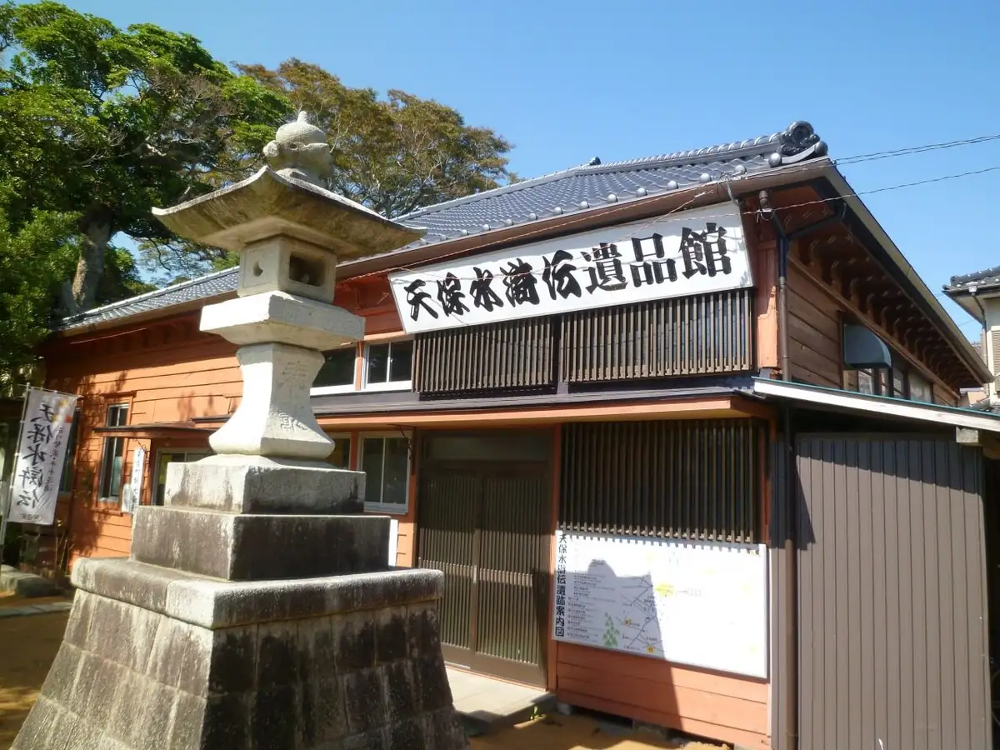
Stay
No bookable places to stay found in Tonosho — nearest options in Asahi.
Dining
いなよし
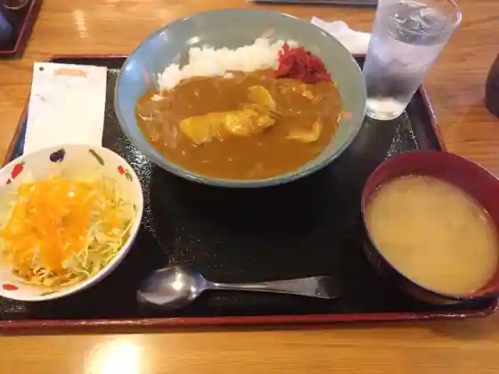
Inayoshi
割烹たべた
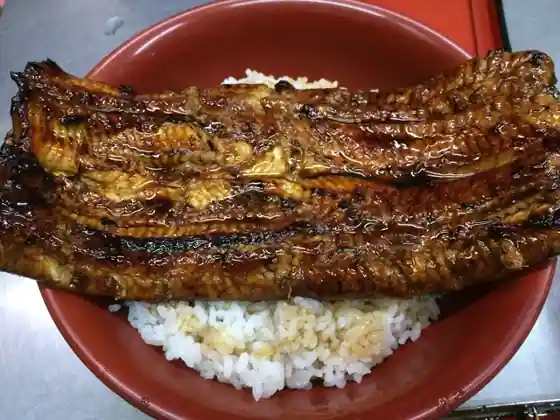
Kappo Tabeta
たなか庵
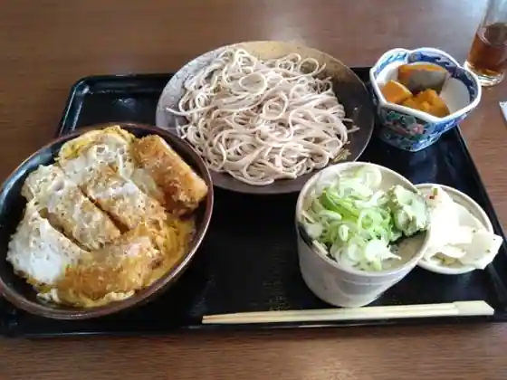
Tanaka Iori
はやし
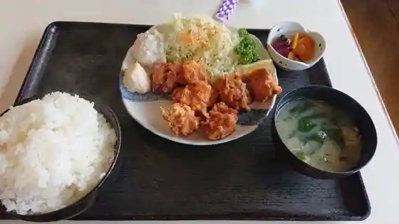
Hayashi
磯山観光いちご園
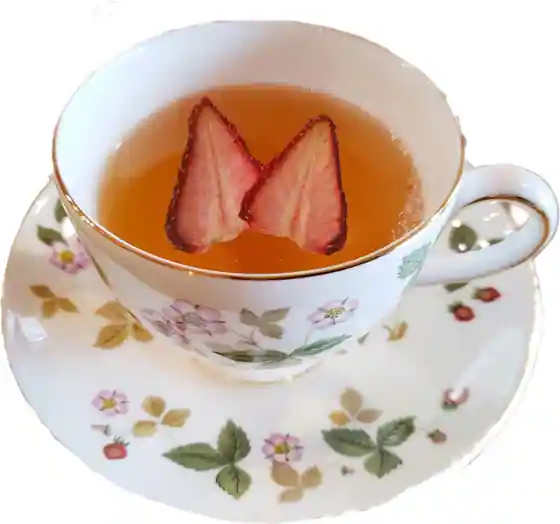
Isoyama Kanko Ichigo Sono
川魚料理 えんどう
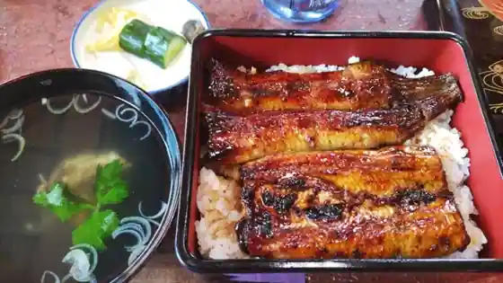
Kawazakana Ryori Endo
高橋食堂
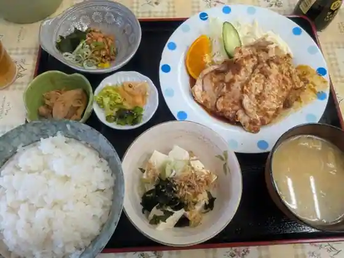
Takahashi Shokudo
東庄ゴルフ倶楽部レストラン
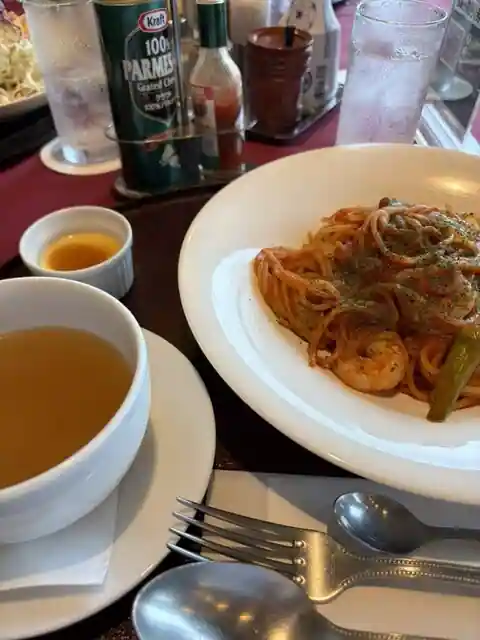
Tonosho Gorufu Kurabu Restaurant
利根食堂
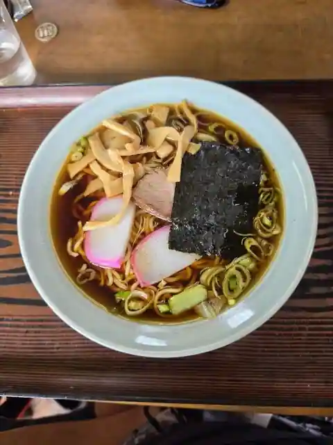
Tone Shokudo
青柳亭
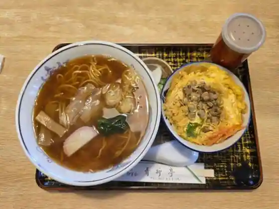
Aoyagi Tei
銀座苑
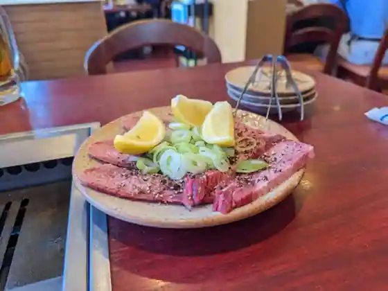
Ginza En
林屋
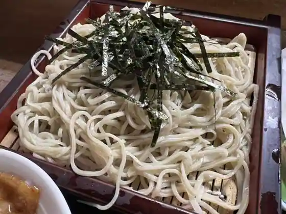
Hayashiya
kitchen&cafe ソライロ
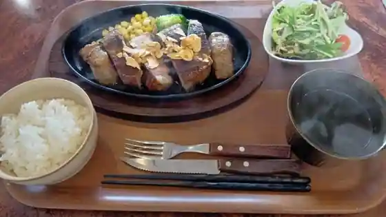
kitchen&cafe Sorairo
珈琲・中国茶 クイーン
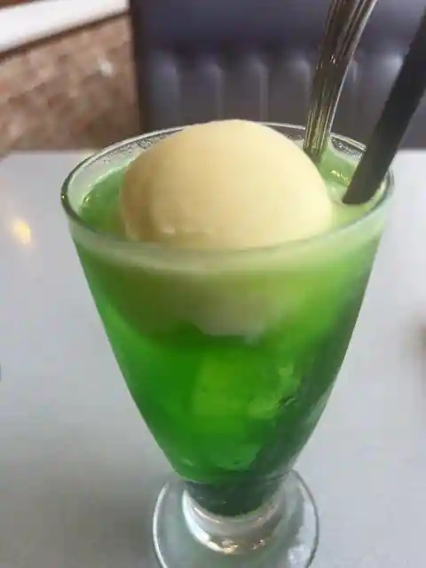
Coffee Chugoku Cha Kuin
たけ坊
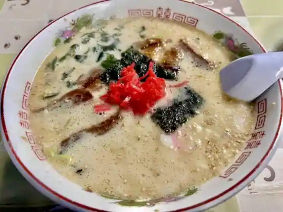
Take Bo
二八蕎麦 伝兵衛
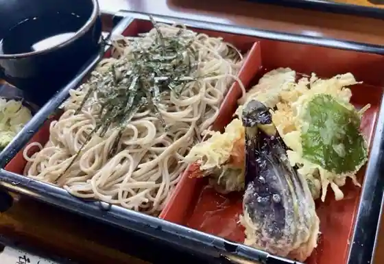
Nihachi Soba Denbe
満鮨
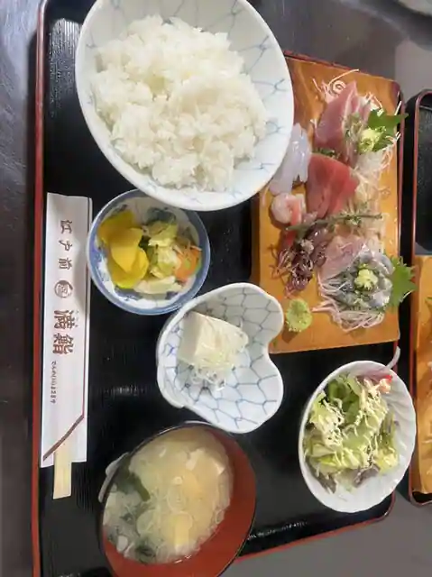
Man Sushi
鯉屋
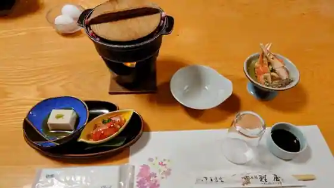
Koi Ya
宮沢米菓
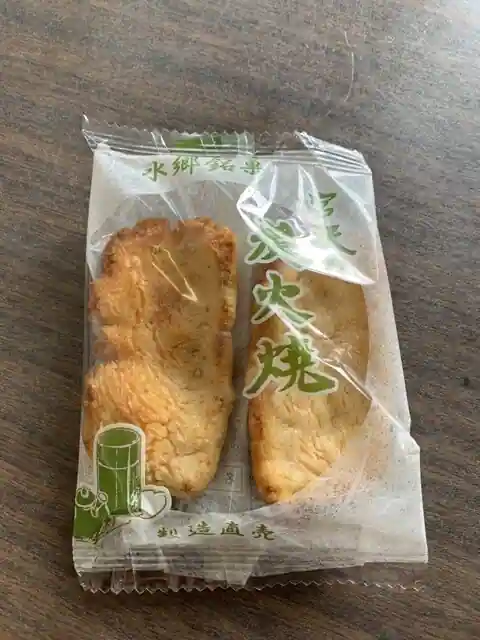
Miyazawa Beika
shiro coffee&bake
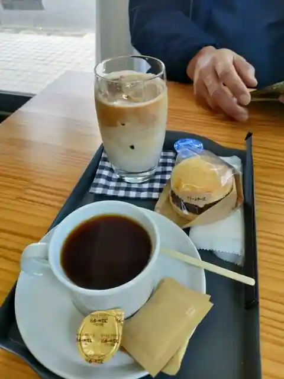
shiro coffee&bake
キッサテン ホケンシツ
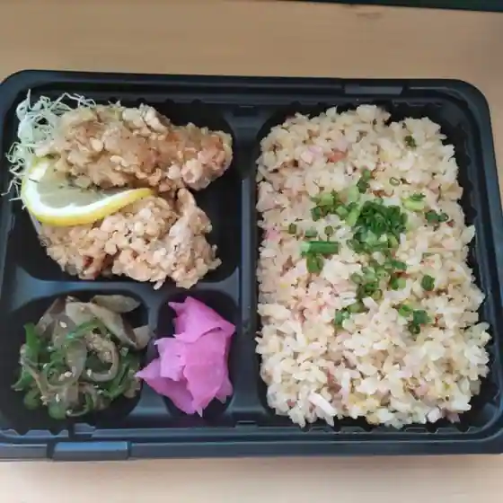
Kissaten Hokenshitsu
ピコット
Pikotto
いしげ製菓
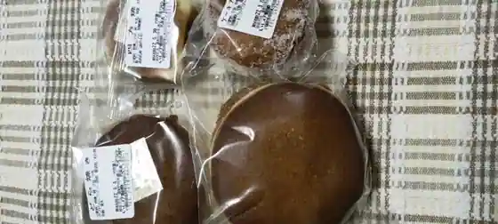
Ishige Seika
あなたの部屋
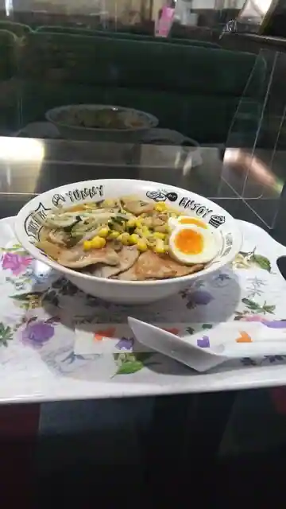
Anatano Heya
Sights
Kumoi Misaki Tsutsuji Park
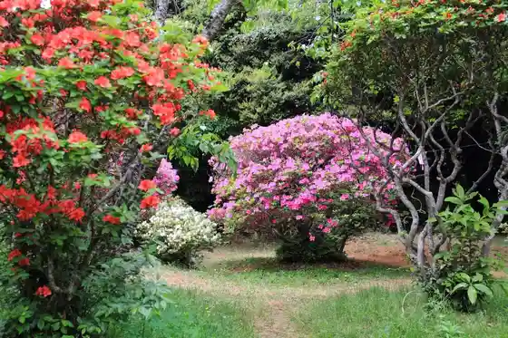
Chiba Prefectural Tonosho Kenmin Forest
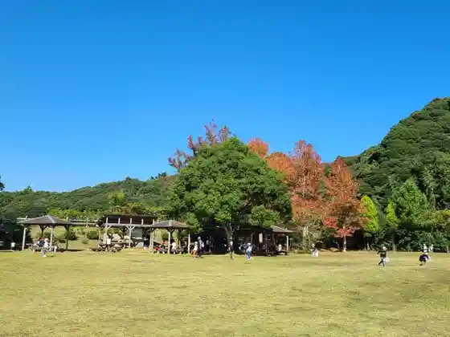
Tenpo Suikoden Ihin Kan / Suwa Shrine
Isoyama Kanko Ichigo Sono
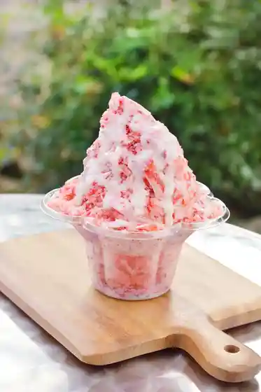
Fukuju Tera
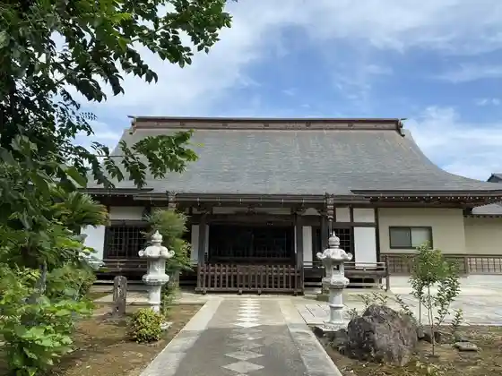
Enmei Tera